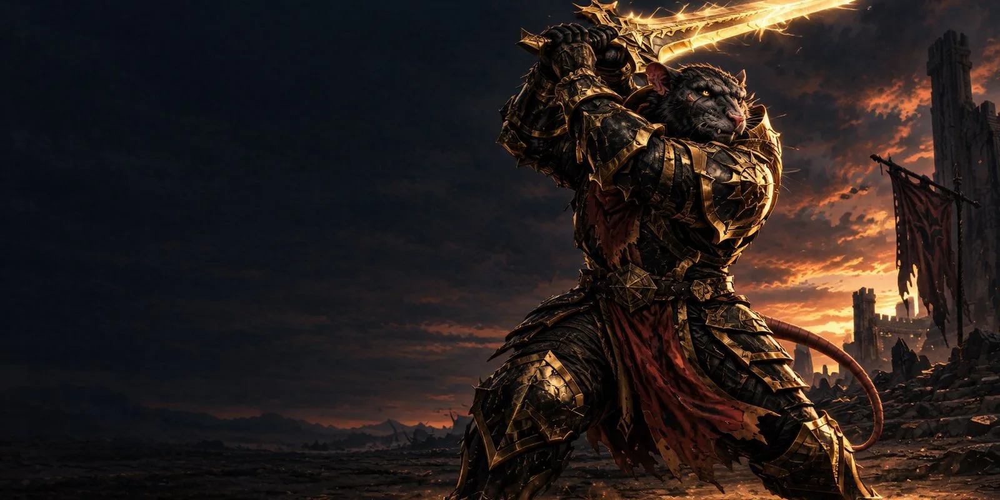
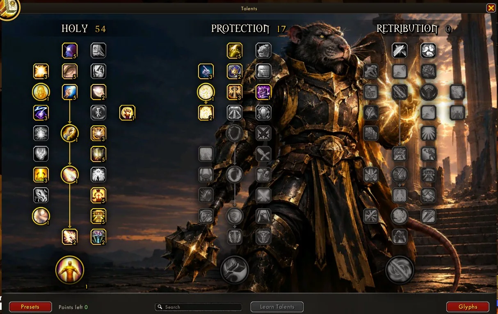
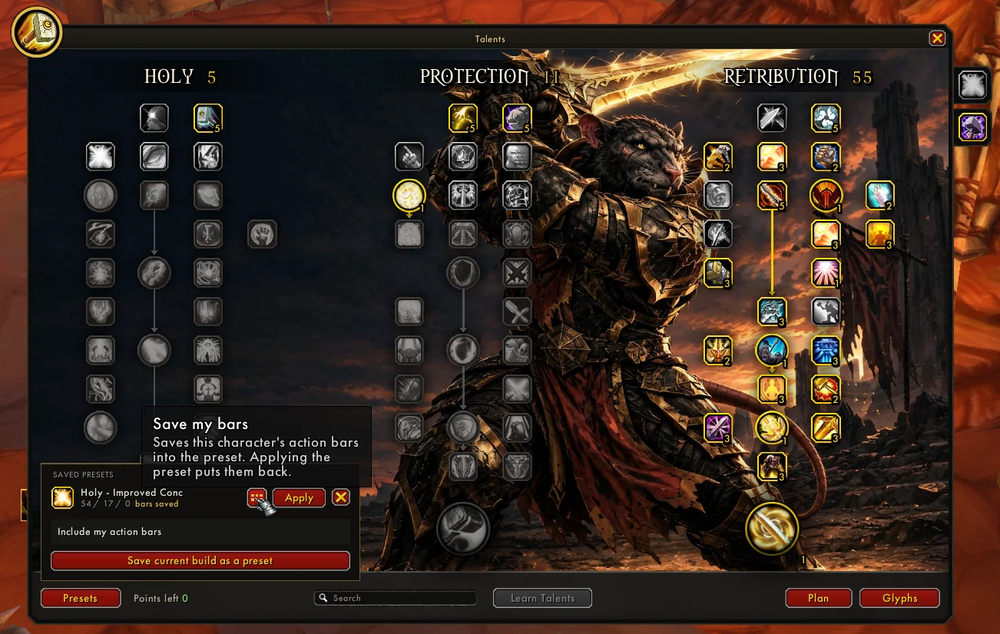
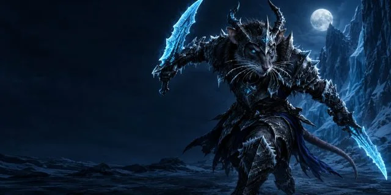
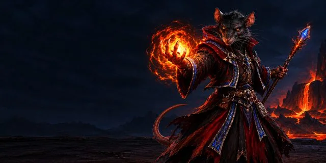
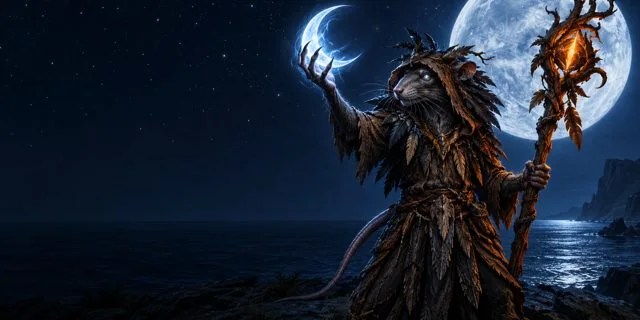

Glyphs
Three major and three minor sockets on a gold star, each showing the ability it changes, with every active glyph listed beside them.
WotLK 3.3.5a · Released
Talents and glyphs. The default window spends a point the moment you click; Ratree lets you build the whole tree first, so a respec has no misclicks.

Left click adds a point, right click takes it back. Learn Talents (N) shows how many points are planned; Discard throws the plan away.

Save "Frost DK" or "Blood Tank" and apply it later, for example on a freshly reset dual spec. Presets are kept per class and shared by every character of that class.

Behind your trees stands the rat of the spec you have the most points in, painted for Ratree in the RATS guild style.



The rest of the talent and glyph work, in the same window.
Three major and three minor sockets on a gold star, each showing the ability it changes, with every active glyph listed beside them.
The inspect window's Talents tab opens the other player's trees here, kept steady even when tooltip addons inspect someone else.
The pet tree has its own tab.
/ratree scale 0.85 resizes the window, from 0.5 to 1.5.
Turn off other talent addons (Talented…). If one is still on, Ratree asks which one to keep.
World of Warcraft\Interface\AddOns\RatreeN opens your talents. WotLK can't take back a learned point:
reset at your class trainer before applying a different preset.